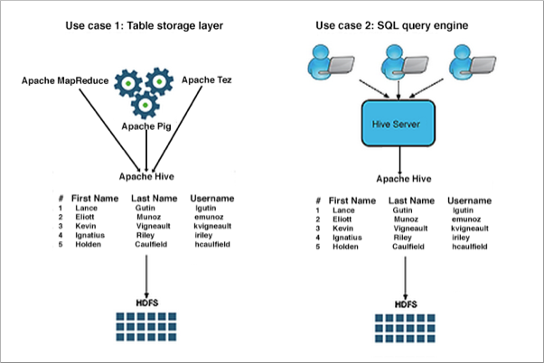
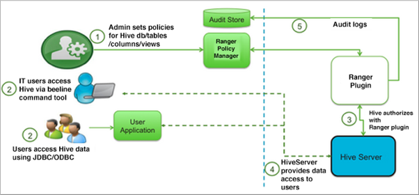

Authorizing Apache Hive Access
As CDP Data Center administrator, you can choose whether or not to set up Apache Ranger authorization use another authorization model to limit Apache Hive access to approved users.
Authorization is the process that checks user permissions to perform select operations, such as creating, reading, and writing data, as well as editing table metadata. Apache Ranger provides centralized authorization for all Cloudera Runtime Services and is recommended. It is best to choose an authorization model based on how your organization uses Hive.
There are two primary use cases for Hive:
-
Using Hive as a table storage layer
Many Cloudera Runtime services and underlying technologies, such as Apache Hive, Apache HBase, Apache Pig, Apache MapReduce, and Apache Tez rely on Hive as a table storage layer.
-
Using Hive as a SQL query engine
Hadoop administrators, business analysts, and data scientists use Hive to run SQL queries remotely through a client connecting to Hive through HiveServer. These users often configure a data analysis tool, such as Tableau, to connect to Hive through HiveServer.

In addition to Apache Ranger, Hive supports storage-based authorization (SBA) for external tables. Ranger and SBA can co-exist in CDP Data Center. The following table compares authorization models:
|
Authorization model |
Secure? |
Fine-grained authorization (column, row level) |
Privilege management using GRANT/REVOKE statements |
Centralized management GUI |
|---|---|---|---|---|
|
Apache Ranger |
Secure |
Yes |
Yes |
Yes |
|
Storage-based |
Secure |
No authorization at SQL layer in HiveServer. Provides Metastore server authorization for the Metastore API only. |
No. Table privilege based on HDFS permission |
No |
|
Hive default |
Not secure. No restriction on which users can run GRANT statements |
Yes |
Yes |
No |
Apache Ranger policy authorization
Apache Ranger provides centralized policy management for authorization and auditing of all Cloudera Runtime services, including Hive. All Cloudera Runtime services are installed with a Ranger plugin used to intercept authorization requests for that service, as shown in the following illustration.

Authorizing Hive through Ranger instead of using SBA is highly recommended.
Storage based authorization
As the name implies, storage-based authorization relies on the authorization provided by the storage layer. In CDP Data Center, the storage layer is HDFS, which provides both POSIX and ACL permissions. Hive is one of many Cloudera Runtime services that share storage on HDFS. By enabling this model on the Hive Metastore Server, Hadoop administrators can provide consistent data and metadata authorization. The model controls access to metadata and checks permissions on the corresponding directories of the HDFS file system. Traditional POSIX permissions for the HDFS directories where tables reside determine access to those tables. For example, to alter table metadata for a table stored in HDFS at /warehouse/tablespace/managed/hive, a user must have WRITE permissions on that directory. However, this authorization model doesn't support column-level security.
In addition to the traditional POSIX permissions model, HDFS also provides ACLs, or access control lists, as described in ACLs on HDFS. An ACL consists of a set of ACL entries, and each entry names a specific user or group and grants or denies read, write, and execute permissions for the specified user or group. These ACLs are also based on POSIX specifications, and they are compatible with the traditional POSIX permissions model.
HDFS ACL permissions provide administrators with authentication control over databases, tables, and table partitions on the HDFS file system. For example, an administrator can create a role with a set of grants on specific HDFS tables, then grant the role to a group of users. Roles allow administrators to easily reuse permission grants. Hortonworks recommends relying on POSIX permissions and a small number of ACLs to augment the POSIX permissions for exceptions and edge cases.
A file with an ACL incurs additional memory cost to the NameNode due to the alternate algorithm used for permission checks on such files.